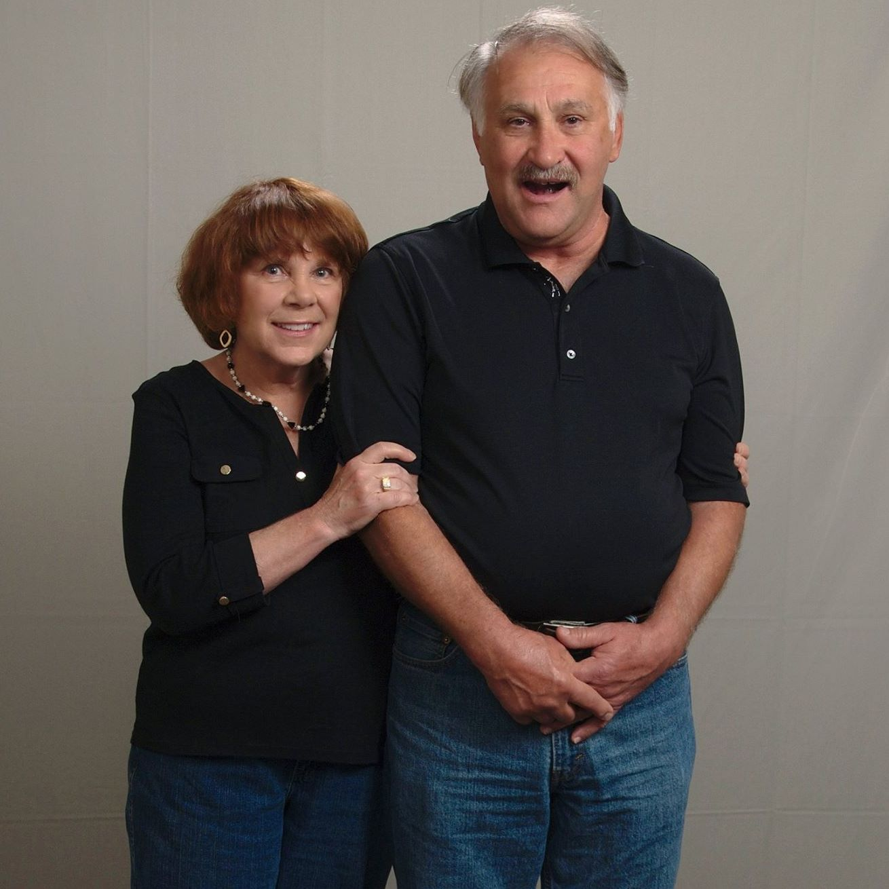

Pictured above is my nephew Erik, as a baby and today.

Pictured above is my niece Nora, as a baby and today.
My nephew Erik was born in 2011 and is almost 11 years old. He has been a huge enrichment to my life, and I see him
at least once a month.
My niece Nora is almost seven and I see her at least once a month also.
Being an uncle is great!

These are my parents, Polly and Carl Sweet.
Both of my parents are retired and enjoy spending time with their grandchildren and travelling, most recently
to Paris, France!
Interesting things about my parents:
- They have travelled to over 40 countries and nearly every U.S. State!
- They both love to garden
- They see their grandchildren at least once a week
Pictured above is my wife, and the love of my life, Jenn Clark.
Jenn is an exceptionally talented person.
She is a fantastic piano player and often performs with and acts
as the music director for our local community theater.
Jenn and I have been married since September 5th, 2020.
Interesting things about Jenn:
- She loves to read
- She is incredibly kind and caring
- She loves dogs!
- She is a fantastic cook
- Jenn and I met in middle school